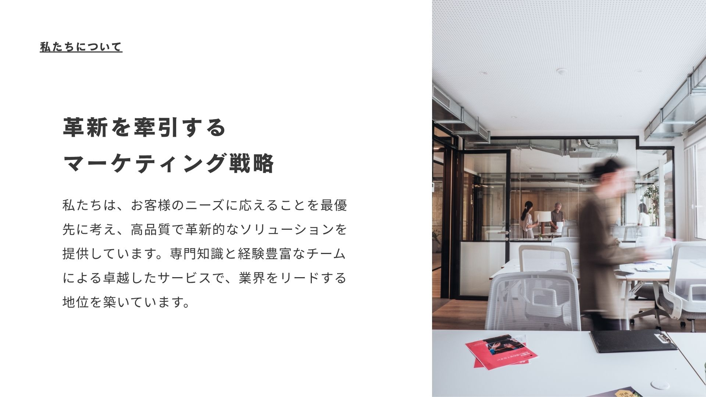
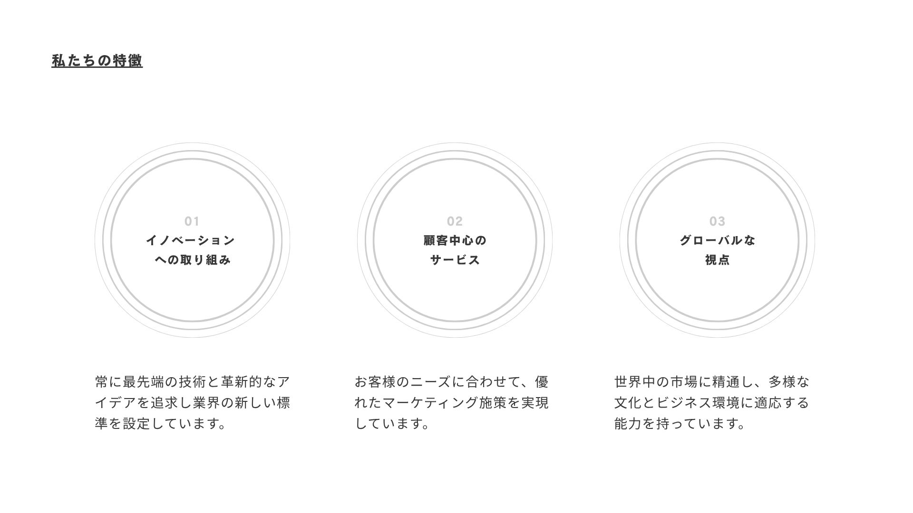
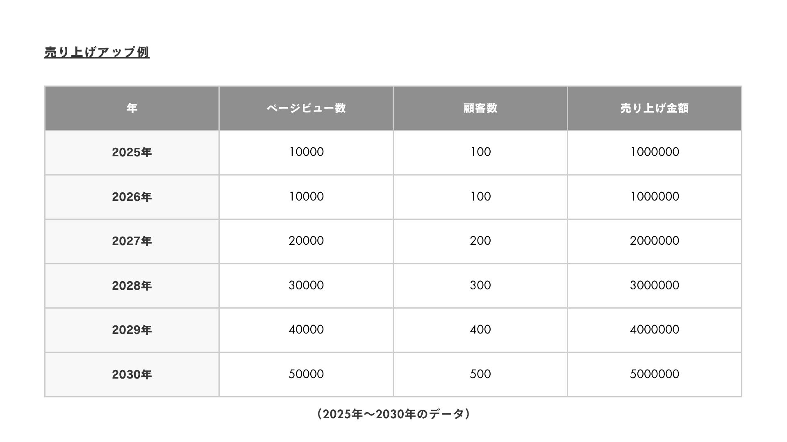
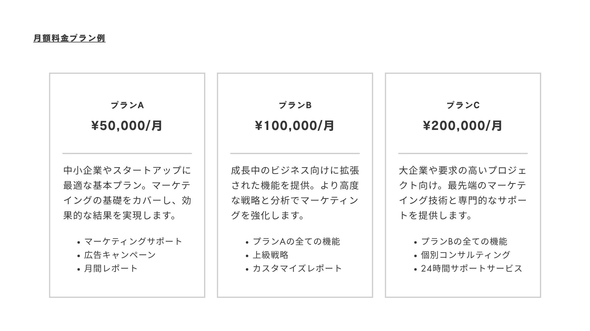
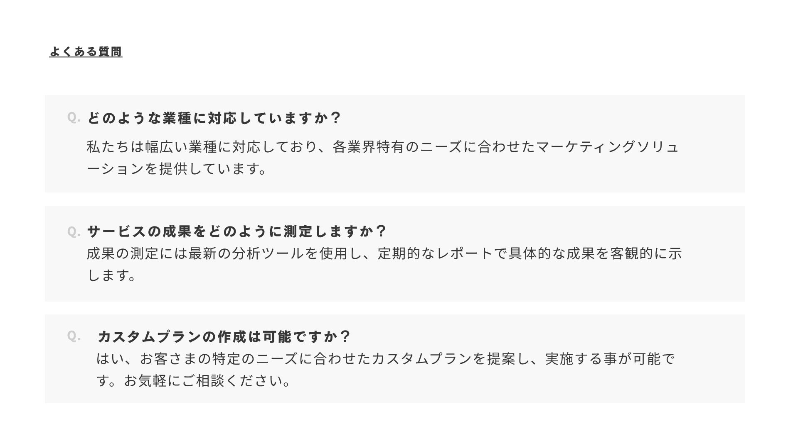
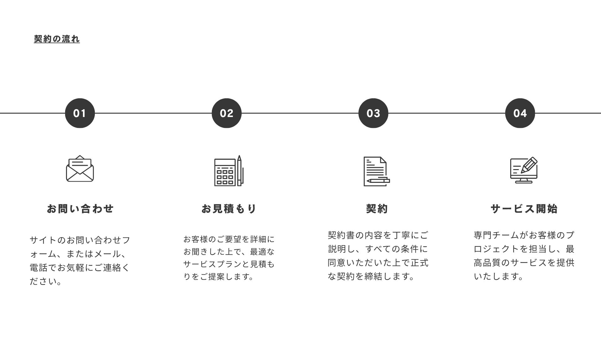
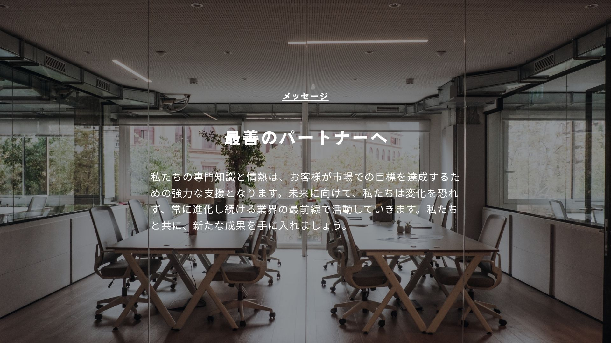
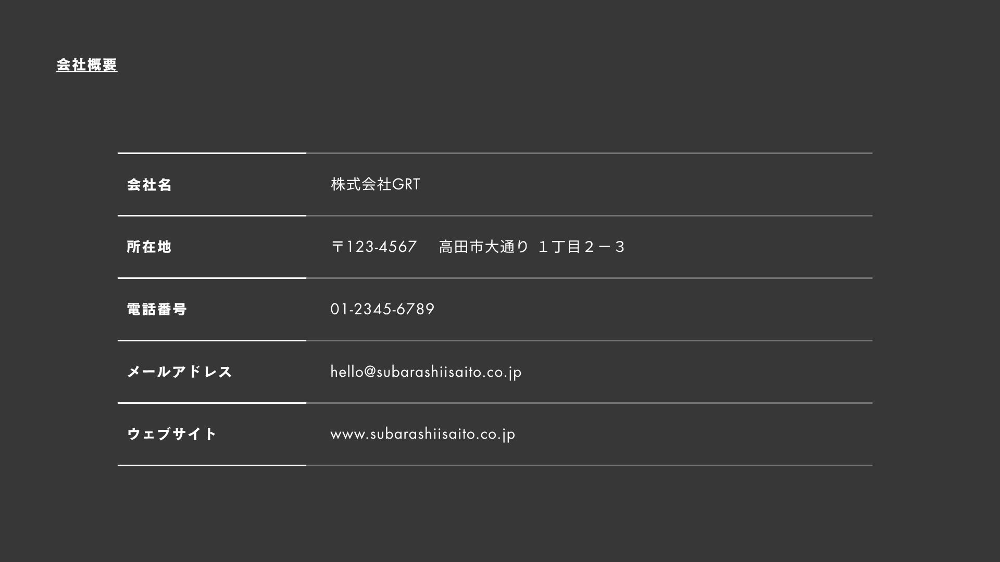

Design
マーケティング提案資料
マーケティング施策の内容が伝わりやすいように、構成と視認性を意識して制作した提案資料です。









Overview
マーケティング施策の提案内容を、視覚的に分かりやすく伝えることを目的に制作した資料デザインです。 情報量が多くなりやすい提案資料でも、内容を整理しながら読み進められるように、構成・余白・文字の見せ方を意識しました。
表紙から課題整理、施策提案までの流れが自然につながるように、各ページの役割を意識して構成しています。 見た人が内容を理解しやすく、提案の意図が伝わりやすい資料になるよう制作しました。
Concept
ビジネス資料としての信頼感を大切にしながら、堅くなりすぎない見やすいデザインを目指しました。 重要な情報が埋もれないように、見出し・本文・図表の優先順位を整理しています。
全体のトーンは落ち着いた印象にまとめ、各ページでデザインの統一感が出るように調整しました。 提案内容をただ並べるだけではなく、読み手が順番に理解しやすい流れになるよう意識しています。
Target
マーケティング施策の提案を受ける企業担当者や、サービス改善・集客施策を検討している人に向けて制作しました。 短時間でも要点を把握しやすいよう、情報を整理し、視線の流れが自然になるレイアウトを意識しています。
制作情報
- 制作期間：約2日（作業時間：約3〜4時間）
- 担当範囲：資料デザイン作成 / レイアウト設計 / 配色調整 / 文字組み / 情報整理
- 使用ソフト：Canva
- 制作形式：提案資料デザイン
制作ポイント
提案資料として内容が伝わりやすくなるように、1ページごとの情報量を調整し、見出しと本文のメリハリを意識しました。 読み手がどこを見ればよいか迷わないよう、余白や文字サイズ、配置のバランスを整えています。
また、複数ページの資料として見たときに統一感が出るよう、色味やフォント、レイアウトのルールをそろえました。 見やすさと信頼感を両立させることで、提案内容がより伝わりやすいデザインになるよう意識しています。